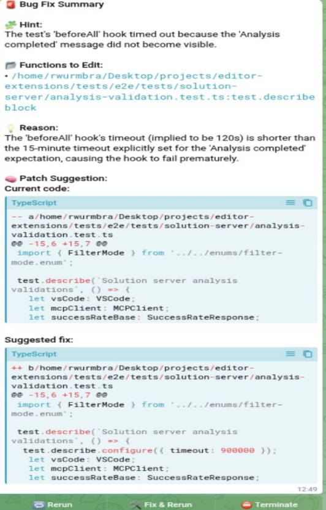

From Assignment to Production-Ready Implementation
Red Hat - Konveyor AI Team
Enterprise Kubernetes platform that provides:
Organizations have massive legacy Java codebases that need modernization to run on OpenShift
Static code analysis identifying migration issues
Automatic import changes and simple refactoring
API changes and architectural updates still require manual developer intervention
Eliminating Manual Migration Work
KAI leverages AI to automate the manual fixes that MTA couldn't handle
Financial institutions with huge legacy codebases. Microsoft has expressed interest in supporting this open-source initiative.
Understanding the Complex System
KAI is a sophisticated multi-component system. Understanding this architecture was critical for implementing the testing infrastructure.
Open-source static analyzer
Pattern matching definitions
Multi-agent LLM system
VS Code plugin
MCP server deployed on OpenShift
What I Was Asked to Build
Goal: Verify that the Solution Server returns correct responses and displays them properly in the UI
Why This Was Difficult
Question: Why is the Solution Server an MCP server?
What existed before my task
export class MCPClient { private readonly url: string; private transport: StreamableHTTPClientTransport; private client?: Client; constructor(url: string) { this.url = url; this.transport = new StreamableHTTPClientTransport(new URL(this.url)); } public static async connect(url: string) { const mcpClient = new MCPClient(url); mcpClient.client = new Client({ name: 'testing-mcp-client', ... }); await mcpClient.client.connect(mcpClient.transport); return mcpClient; } // getBestHint(), getSuccessRate(), request() - business logic only }
Reverse Engineering the System
Without clear documentation, I had to reverse-engineer the system to understand it
Solution Server uses Keycloak OAuth2 for authentication (not simple JWT as expected)
→ Required learning Keycloak integration and OAuth2 refresh token flows
Everything in one class
export class MCPClient { private bearerToken: string | null = null; private refreshToken: string | null = null; private tokenExpiresAt: number | null = null; private refreshTimer: NodeJS.Timeout | null = null; private async initialize(): Promise<void> { const isLocal = process.env.SOLUTION_SERVER_LOCAL === 'true'; if (isLocal) { this.bearerToken = process.env.LOCAL_MCP_TOKEN || 'local-mcp-token'; } else { await this.authenticateFromEnv(); // Password grant flow } // Create transport with token const headers = { Authorization: `Bearer ${this.bearerToken}` }; this.transport = new StreamableHTTPClientTransport(url, { requestInit: { headers } }); if (!isLocal) this.startTokenRefreshTimer(); }
const TOKEN_EXPIRY_BUFFER_MS = 30000; // Fixed 30 second buffer private async authenticateFromEnv(): Promise<void> { // ... fetch token via password grant ... this.tokenExpiresAt = Date.now() + tokenData.expires_in * 1000 - TOKEN_EXPIRY_BUFFER_MS; } private startTokenRefreshTimer(): void { const timeUntilRefresh = this.tokenExpiresAt - Date.now(); this.refreshTimer = setTimeout(() => this.refreshTokenFlow(), timeUntilRefresh); } private async refreshTokenFlow(): Promise<void> { // Refresh token, recreate transport, restart timer await this.client.connect(this.transport); // Reconnect inline! this.startTokenRefreshTimer(); }
Two classes with clear responsibilities
interface TokenResponse { access_token: string; refresh_token?: string; expires_in: number; }
Handles ALL authentication
Handles MCP protocol ONLY
MCPClient pulls token from AuthManager before each request, instead of AuthManager pushing via callbacks
→ No circular dependency, no callback complexity, simpler testing
70% ratio vs fixed buffer
const TOKEN_EXPIRY_BUFFER_MS = 30000; // Token lifetime: 60s // Refresh at: 60 - 30 = 30s ✓ // Token lifetime: 300s // Refresh at: 300 - 30 = 270s // → Only 10% buffer! Risk of expiry // Token lifetime: 20s // Refresh at: 20 - 30 = -10s // → Negative! Immediate refresh loop
const TOKEN_EXPIRY_RATIO = 0.7; // Token lifetime: 60s // Refresh at: 60 × 0.7 = 42s ✓ // Token lifetime: 300s // Refresh at: 300 × 0.7 = 210s ✓ // → 30% buffer (90s) - safe! // Token lifetime: 20s // Refresh at: 20 × 0.7 = 14s ✓ // → 30% buffer (6s) - still works!
private setTokenData(tokenData: TokenResponse): void { this.bearerToken = tokenData.access_token; this.refreshToken = tokenData.refresh_token || this.refreshToken; // Schedule refresh at 70% of lifetime this.tokenExpiresAt = Date.now() + tokenData.expires_in * 1000 * TOKEN_EXPIRY_RATIO; this.startAutoRefresh(); }
Works correctly with ANY token lifetime - 10 seconds or 10 hours. Always maintains 30% safety buffer.
How MCPClient gets tokens without knowing auth details
public async getBearerToken(): Promise<string> { await this.ensureAuthenticated(); // ← All complexity hidden here if (!this.bearerToken) { throw new Error('Authentication failed: no token available'); } return this.bearerToken; }
private async request<T>(endpoint, params, schema): Promise<T | null> { // 1. Get token - don't care HOW it's obtained const token = await this.authManager.getBearerToken(); // 2. Reconnect only if token changed if (token !== this.currentToken) { await this.reconnectWithNewToken(token); this.currentToken = token; } // 3. Make the actual request const result = await this.client.callTool({ name: endpoint, arguments: params }); // ... }
authentication-manager.ts
export class AuthenticationManager { private bearerToken: string | null = null; private refreshToken: string | null = null; private tokenExpiresAt: number | null = null; private tokenPromise: Promise<void> | null = null; // ← The guard! public async ensureAuthenticated(): Promise<void> { // 1. If auth already in progress, wait for it if (this.tokenPromise) { return this.tokenPromise; } // 2. If token valid, skip auth entirely if (this.bearerToken && !this.isTokenExpiringSoon()) { return; } // 3. Need auth - create guarded promise if (!this.refreshToken || this.isLocal) { this.tokenPromise = this.authenticate() .finally(() => { this.tokenPromise = null; }); return this.tokenPromise; } // 4. Try refresh, fallback to full auth this.tokenPromise = this.refreshTokenFlow() .catch(() => this.authenticate()) .finally(() => { this.tokenPromise = null; }); return this.tokenPromise; } }
private isTokenExpiringSoon(): boolean { if (!this.tokenExpiresAt) return true; return Date.now() >= this.tokenExpiresAt; }
Skips auth if token still valid → fewer network calls
// 50 concurrent requests hit the server // Token expires during processing Request 1: refreshTokenFlow() → gets Token B Request 2: refreshTokenFlow() → gets Token C Request 3: refreshTokenFlow() → gets Token D ... Request 50: refreshTokenFlow() → gets Token Z → 50 OAuth calls to Keycloak! → Token constantly changing → Requests fail with wrong token
// Same 50 concurrent requests Request 1: ensureAuthenticated() → tokenPromise = authenticate() Request 2: ensureAuthenticated() → return tokenPromise // waits! Request 3-50: all return same tokenPromise // authenticate() completes → 1 OAuth call total → All 50 requests get same token → All succeed
public async ensureAuthenticated(): Promise<void> { // Guard: If auth in progress, ALL callers await the SAME promise if (this.tokenPromise) { return this.tokenPromise; // ← This is the magic line } // Only first caller creates the promise this.tokenPromise = this.authenticate() .finally(() => { this.tokenPromise = null; }); // ← Cleanup after done return this.tokenPromise; }
// No auth at all this.transport = new StreamableHTTPClientTransport( new URL(this.url) ); // Direct connect await client.connect(transport);
// Auth mixed in MCPClient await this.authenticateFromEnv(); headers['Authorization'] = `Bearer ${this.bearerToken}`; // Fixed timer setTimeout(() => this.refreshTokenFlow(), timeUntilRefresh );
// Separate auth manager const token = await authManager.getBearerToken(); // Reconnect only if changed if (token !== currentToken) { await reconnect(token); currentToken = token; }
| Aspect | Initial | V1 | V3 |
|---|---|---|---|
| Files | 1 (MCPClient) | 1 (MCPClient) | 2 (MCPClient + AuthManager) |
| Auth Logic | None | Inside MCPClient | Separate AuthManager |
| Refresh Strategy | N/A | Fixed 30s buffer | 70% of lifetime |
| Concurrency | N/A | No protection | Promise guard |
| Token Check | N/A | None (always refresh) | isTokenExpiringSoon() |
| Reconnect | N/A | Always on refresh | Only when token changes |
A side project born from real pain
While building the MCP authentication tests, I kept hitting the same frustrating loop:
So I built a tool to solve it.
AI-powered agentic log analysis + intelligent remediation
Executes tests and captures logs
Analyzes logs using Gemini AI
Explores codebase, generates patches
Remote approval via interactive buttons
Eliminates "Context Switch" Penalty.
You come back to a solution, not a problem.

Zero frameworks, direct API integration
RootCauseController ├── ProjectRunner │ └── run() → logs │ ├── AiTraceAgent │ └── analyze(logs) → hint │ ├── BugFixAgent ← Agentic! │ ├── TreeViewer │ ├── FunctionExtractor │ └── FileReader │ └── generate() → patch │ ├── GitManager │ └── commit to separate branch │ └── TelegramManager └── notify + wait for user
Working prototype - I prepared a presentation for Red Hat leadership about potentially developing this internally. The log analysis agent is generic and can work with any log format.
MCP Authentication + Root-Cause AI
Root-Cause AI Demo:
Full code, tests, and documentation available